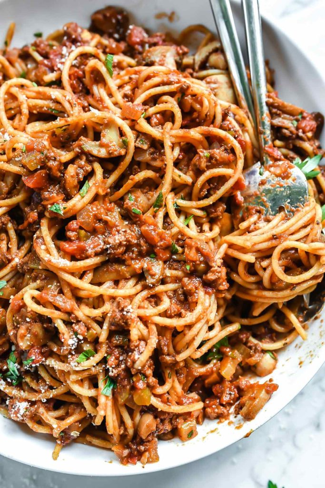

Homemade Spaghetti and Meat Sauce

Ingredients
- Ground beef
- Tomato sauce
- Diced tomatoes
- Tomato paste
- Beef broth
- Canned mushrooms
- Splash of wine
- Onion
- Celery
- Fresh garlic
- Dried herbs
- Bay leaves
- Kosher salt
- Ground black pepper
- Dried whole cloves
Directions
- Brown the ground beef and drain off any excess fat.
- Throw in the chopped celery, onion, and garlic and cook until the vegetables soften.
- Dump the rest of the homemade pasta sauce ingredients into the pot and bring the mixture to a boil.
- Once the spaghetti sauce is boiling, reduce the heat to low and let it simmer on the stove for 3 hours.
- Boil the spaghetti noodles according to package instructions.
- Serve.
See original recipe here!
Contact Me
alyssa.dimmick@umontana.edu
32 Campus Drive Missoula, MT 59812